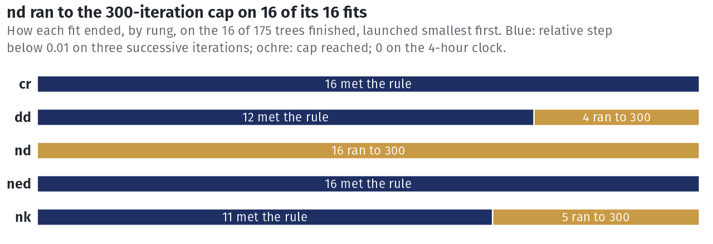
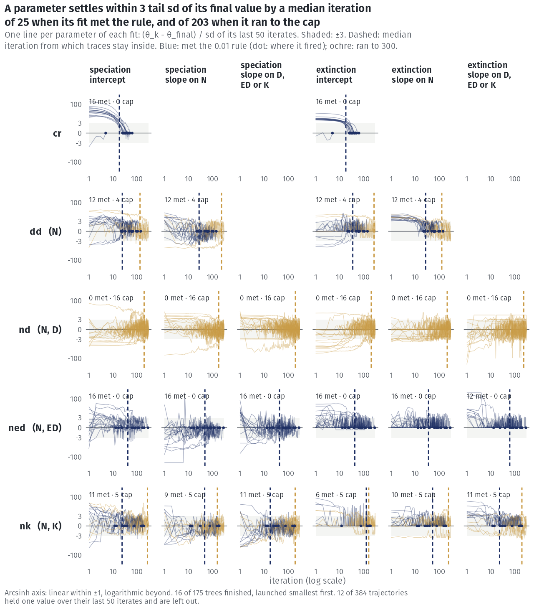
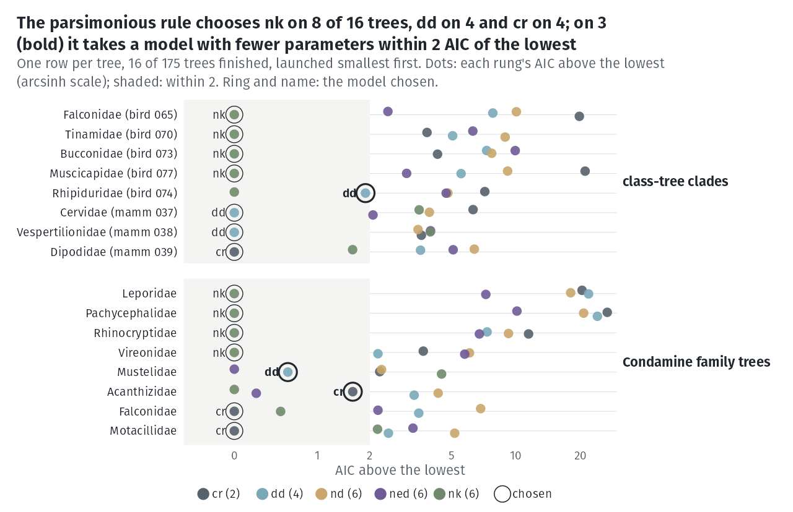
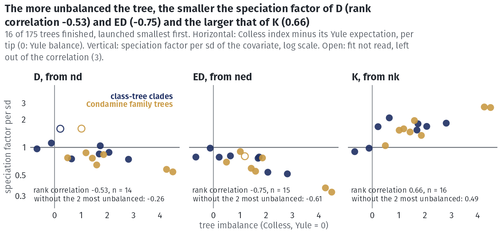
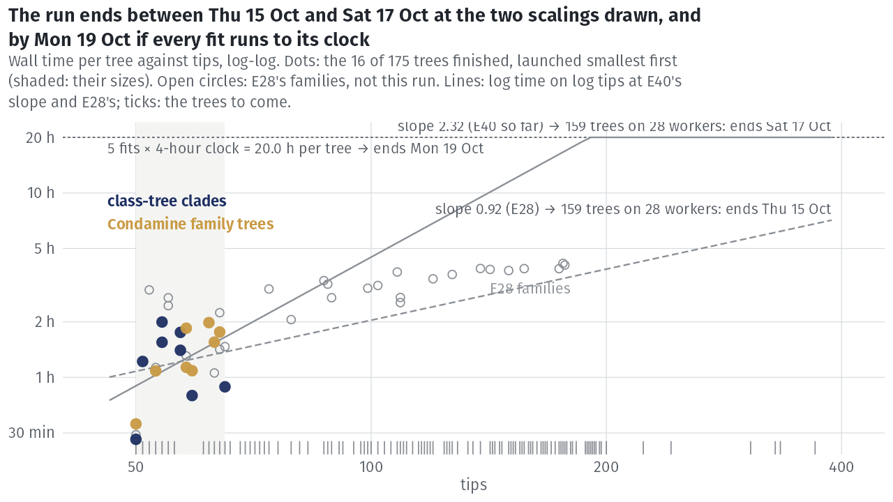

E40 — birds and mammals cut into clade-sized trees
| Status | closed 2026-10-18 at 170 of 175 trees: five trees (four mammal clades of 91-135 tips and Picidae, 223 tips) ran 42 h after the reboot of 2026-10-16 with no fit written, past the 20 h five four-hour clocks allow (the clock is read only between iterations), and were stopped by hand; results/E40/STOPPED-trees.txt. The results on the 170 are on Real phylogenies; the interim report below covers the first 16 |
| Package build | f30a791 (the build of E28) |
| Driver / analysis | sim/E40-tiles.R, sim/E40-survey.R, sim/E40-units.R (the trees); sim/E25-real.R --cand results/E40/candidates.csv (the fits); sim/E40-report.R (the interim report, and the tables of results/E40/report/ regenerated over the 170 trees on 2026-10-18) |
| Data | results/E40/candidates.csv, pairs.csv, class-tree-tiles-*.csv, condamine-families.csv; outside the repository, results/E40/fits/fit-<id>.rds and results/E40/report/ (fits.csv, edges.csv, coefficients.csv, trees.csv, slot-check.csv); interim report report/e40-status/e40-status.pdf |
Question
E26 and E28 fitted 47 family trees. Whole class trees are beyond the estimator: a lineage-level ladder at 10,000 tips is months of compute by the measured scaling, and the path's per-lineage table would not fit in memory. E40 fits birds and mammals as many trees of the size the study has measured, and asks whether the class trees, whose taxonomic placements and dating differ from the family trees', give the same answers where the two overlap.
Design
Set (a), class-tree clades. The atlas's class trees, Upham et al. 2019 (mammals, 5,912 tips) and McTavish et al. 2025 (birds, 10,824 tips), cut from the root into disjoint clades of at most 200 tips, kept from 50 (sim/E40-tiles.R): 116 clades (77 bird, 39 mammal), 14,965 tips, about 90% of each class, \(\rho = 1\). Both trees are fully binary, so species placed by taxonomy are not visible in the topology (about 1,800 of Upham's 5,912 by that paper's count; the birds' share is not known here).
Set (b), Condamine family trees. Bird and mammal family trees of Condamine et al. (2019) with 50 to 400 tips, tip spread at most 15% of the crown age, and \(\rho\) = tips / the family's species in the class tree between 0.5 and 1.10, taken as \(\min(\rho, 1)\) (12 trees above 1, where the Condamine family concept is slightly wider than the Catalogue of Life's): 59 trees (45 bird, 14 mammal), 17 of them not among E26's 47.
Pairs. A clade of (a) with at least 90% of its tips in one family that has a tree in (b): 30 clades in 24 families (results/E40/pairs.csv).
Fits.
| setting | value |
|---|---|
| ladder | cr → dd → {nd, ned, nk}, exponential link, at each tree's \(\rho\) |
| box | auto_bounds() |
| draws | 300 |
| iterations | 300 (the budget) |
| clock | 4 h per fit (the safety; E28's 60-minute clock ended 45 of its 116 fits) |
| choice | compare_models(): fewest parameters within 2 AIC of the minimum |
| path | over \(N\), \(D\), ED, \(K\) on the observed tree and on 3000 surrogate draws |
| order | smallest trees first |
Recorded per tree: everything E28 records, the Colless index and the set.
Pre-set rule
Readings. Per tree, the parsimonious choice and each lineage-level coefficient as a factor per standard deviation of its covariate, read only where the fit has a median effective sample of at least 10 and did not end on its clock (sampler-limited and clock-limited otherwise, reported and not read). Across trees, by class and set: the share choosing each model, and the distribution and sign of each read coefficient.
Rule for the pairs. Over the pairs where both fits of the chosen model are read: the class-tree clade and its family tree agree on the parsimonious choice on at least 70% of pairs, and on the sign of each lineage-level coefficient read in both on at least 80%. If both hold, set (a)'s across-tree statements are read beside (b)'s; otherwise set (a) is reported and its across-tree statements are not made. Fewer than 10 readable pairs: not evaluable, and said so.
Results (interim: 16 of 175 trees, report of 2026-10-14 21:11)
The results on the 170 finished trees are on Real phylogenies; this section is the interim report of 2026-10-14 on the first 16 trees, kept as the record it was.
These are the 16 smallest trees (50 to 65 tips): 5 bird and 3 mammal clades, 6 bird and 2 mammal family trees. No tree failed and no fit returned an error; median wall time per tree 1.3 h (largest 2.0 h). The report projected the end of the run between Thu 15 Oct 15:14 (E28's slope of time on tips, 0.92) and Sat 17 Oct 10:53 (E40's own, 2.32), and Mon 19 Oct 20:15 if every remaining fit ran to its clock; the largest tree, 370 tips, is predicted at 6.8 to 20 h.
Stop reasons. Of 80 fits, 55 met the stopping rule, 25 ran to the 300-iteration cap, 0 ended on the clock. By rung, on the cap: cr 0 of 16, dd 4, nd 16 of 16, ned 0, nk 5.

nd fit ran to the cap; cr and ned all met the rule.Convergence. Each of the 384 parameter trajectories is put on one axis as \((\theta_k - \theta_{final})/s\), \(s\) the standard deviation of its last 50 iterates. A parameter of a fit that met the rule stays within \(3s\) of its final value from a median iteration of 25; of a capped fit, from iteration 203. The log-likelihood rises a median 3.0 units from first to last iterate, 99% of the gain by the third iteration. 182 of 384 trajectories touch a box edge at least three times (172 of them a lower edge) and 128 end on it; most often the extinction intercept \(\gamma_0\) (64), the extinction slope on \(N\), \(\gamma_N\) (63), and \(\gamma_{ED}\) (16). Where \(\gamma_0\) or \(\gamma_N\) ends on its lower edge the extinction rate is held at the smallest value the box allows. 3 of 80 fits end with an effective sample below 10 (lowest 1), and 14 dip below 10 on at least one iterate; nd has the lowest median final ESS, 76 of 300. The 25 capped fits end with a largest relative step of median 0.83 against the tolerance 0.01.

nd row never settles.Model choice.
| set | cr |
dd |
nd |
ned |
nk |
differs from min AIC | trees |
|---|---|---|---|---|---|---|---|
| class-tree clades, birds | 0 | 1 | 0 | 0 | 4 | 1 | 5 |
| class-tree clades, mammals | 1 | 2 | 0 | 0 | 0 | 0 | 3 |
| Condamine family trees, birds | 3 | 0 | 0 | 0 | 3 | 1 | 6 |
| Condamine family trees, mammals | 0 | 1 | 0 | 0 | 1 | 1 | 2 |
| all | 4 | 4 | 0 | 0 | 8 | 3 | 16 |
The median distance from the minimum to the nearest model outside the 2-AIC window is 3.4.

Coefficients. 45 of 48 lineage-level fits are read. Median speciation factor per sd: D 0.80 (above 1 on 2 of 14 trees), ED 0.76 (0 of 15), K 1.63 (14 of 16). 30 of the 45 read extinction factors come from fits whose extinction intercept or slope ends on a box edge, so the extinction side is not read. Over the read fits the rank correlation of the log factor with Colless imbalance (median 1.52, range -0.66 to 4.48) is -0.53 for D, -0.75 for ED and 0.66 for K.

Paths. The path's BIC set on speciation equals the covariates of the ladder's choice on 4 of 16 trees (observed tree and draws alike); it is empty on 5; D enters first on 9.
Pairs. At the report, 1 of 30 pairs had both members finished: Falconidae, where the clade chose nk and the family tree cr. By the file names at 23:03, Cotingidae's pair is also complete. The rule was evaluated on 2026-10-18 on the 29 pairs E40 finished (see Conclusion).

Conclusion
The pairs rule (2026-10-18). Read on the 29 pairs with both members finished (Picidae's is missing): both chosen fits readable on 18, so the rule is evaluable; the clade and its family tree make the same parsimonious choice on 10 of 29 (34%, rule 70%), so set (a)'s across-tree statements are reported and not read. Where both read the same covariate the sign agrees on 21 of 21 (ED 10, K 11) and the factor per sd lies within 1.3 of its pair's on 13 of 21. The four-hour clock ended 144 of 850 fits (nd 86, nk 40, ned 18), mostly on trees above 150 tips; nd meets the stopping rule on 3 of 170. See Real phylogenies.
The interim reading (2026-10-14, 16 trees). The rule was not then evaluable. The first 16 trees already showed three things the readings must handle. Every nd fit ran to the 300-iteration cap. A third of the parameter trajectories ended on a box edge, almost all lower edges of the extinction parameters, so the extinction side was held by the box rather than the tree (E41 tested whether those edges bind: they bind on 4 of 63). And the coefficients tracked imbalance in the direction E39 found for the covariates' overlap on real trees, which bears on reading a K choice and an ED choice as distinct. With 16 small trees these were interim readings, not results; the 170-tree results are on Real phylogenies.